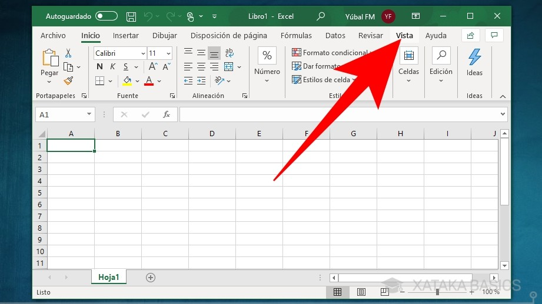
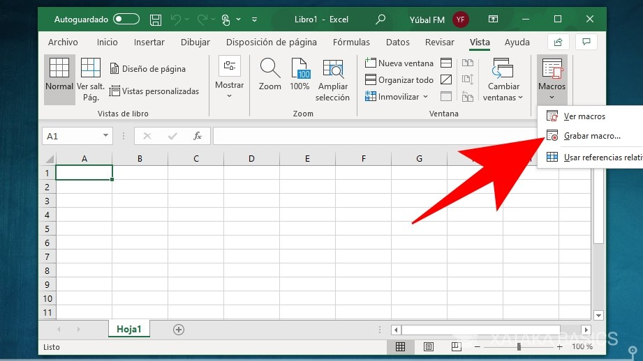
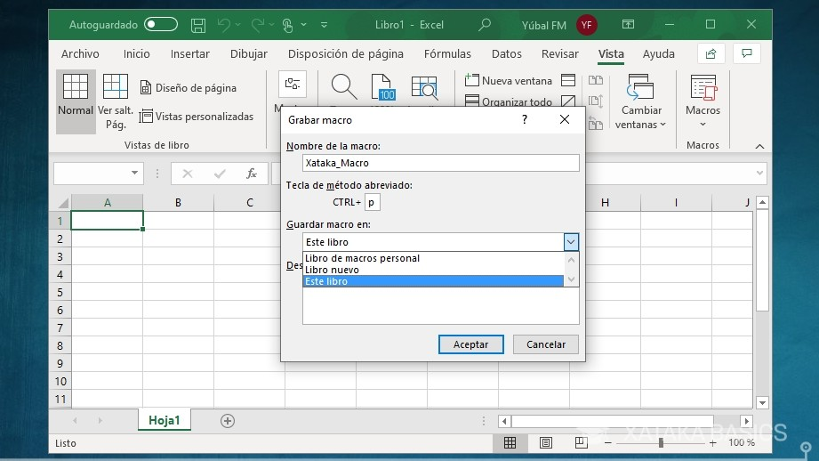
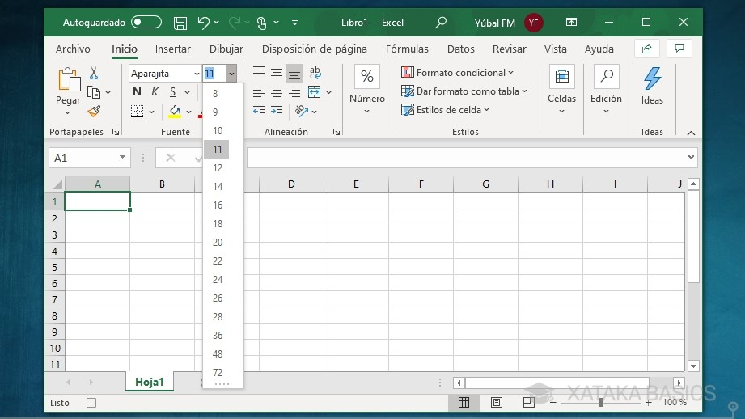
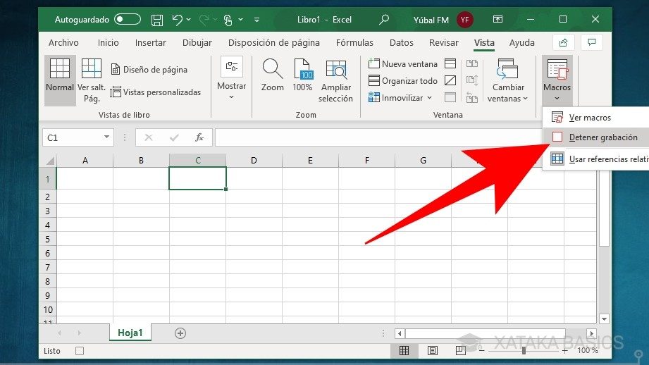
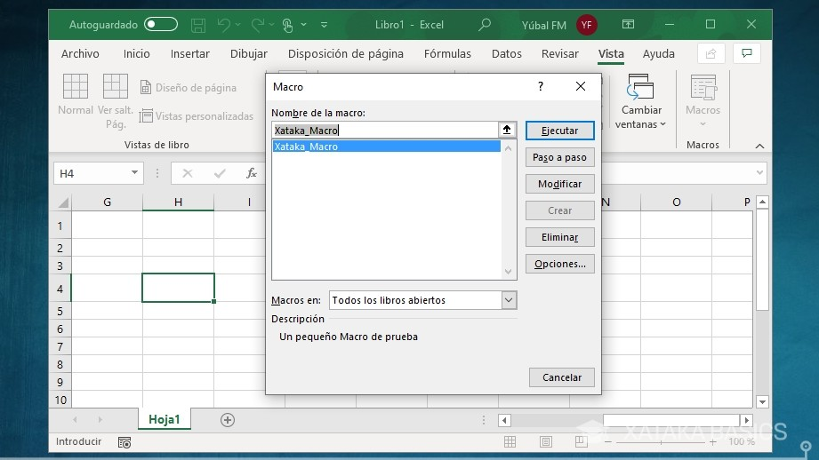

1° Para crear un Macro, primero vas a tener que abrir Excel. una vez estés dentro, en la barra de menú superior tienes que pulsar sobre la sección de Vista. Te aparecerá
a la derecha del todo de la barra de menú, justo antes de la ayuda.

2° Una vez estés dentro de la sección de Vista, a la derecha del todo de la cinta de opciones tienes el botón de Macros. Si pulsas en la parte superior del botón se abrirá
una ventana de macros, pero lo que tienes que hacer para crear uno rápidamente es clickar sobre la parte inferior del botón donde está la flecha, y pulsar sobre la opción
Grabar macro que aparecerá en el pequeño menú desplegable..

3° Antes de empezar a grabar el macro, primero tendrás que ponerle un nombre y asignarle un acceso directo. Excel te permite crear libros, como colecciones de macros, o
sea que también podrás seleccionar un libro de macros y añadir una descripción. Cuando lo tengas, pulsa en el botón de Aceptar para empezar a grabar el macro.

4° Cuando pulses en Aceptar en la ventana anterior, volverás a Excel. La aplicación estará ya grabando el macro, o sea que tienes que ir pulsando en las opciones o teclas
que quieras registrar y que luego se vuelvan a repetir en el mismo orden cuando lances el macro.

5° Una vez hayas terminado, vuelve a la sección de Vista y pulsa en la parte inferior de la ventana de Macros. En el pequeño menú desplegable, ahora tienes que pulsar
en el botón de Detener grabación que aparecerá donde antes estaba la opción de iniciarla.

6° Y ya está, ya habrás creado tu macro. Ahora, cada vez que pulses en el atajo de teclado que configurases se volverán a repetir los pasos que hayas dado durante la grabación.
Además, si en la sección de Vista pulsas directamente en el botón de Macro, irás al menú donde puedes ver todos los libros de marcos y donde vas a poder ejecutar, revisar
y modificar los macros que hayas creado..
Te invitamos a que observes el siguiente video:
|